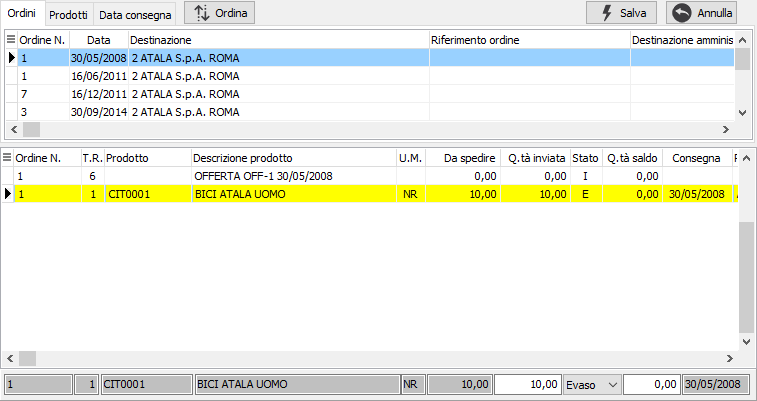
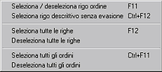

Evasione ordini clienti
L'evasione degli ordini da parte del packing list ha come filtro sempre il codice del cliente.
Se per lo stesso cliente sono stati inseriti più ordini con destinazioni diverse viene visualizzata una finestra che permette all'utente di specificare quali di questi ordini utilizzare per la selezione.
In questa finestra è possibile specificare una singola destinazione da utilizzare per selezionare gli ordini del cliente. Dopo aver inserito i criteri necessari e premuto il pulsante Esegui, gli ordini selezionati vengono visualizzati nella finestra di selezione.
Nel caso in cui esistano ordini da evadere per il cliente tutti con la stessa destinazione viene direttamente richiamata la finestra di selezione.

La finestra è suddivisa in due sezioni.
Nella sezione superiore sono presenti i riferimenti agli ordini da evadere che possono essere ordinati e visualizzati per ordine, per prodotto oppure per data consegna. Selezionando un elemento in questa sezione, tramite il mouse o spostandosi con le frecce, nella parte sottostante vengono visualizzati i dettagli delle righe relative. Il pulsante Ordina, presente solo nella pagina Ordini, consente di modificare l'ordinamento crescente o decrescente dei dati della griglia superiore in base alla data del documento.
Nella sezione inferiore è possibile scegliere quali righe, e con quali quantità, inserire nel documento.
La selezione e l'annullamento della stessa può avvenire in diversi modi. Per selezionare oppure annullare la selezione di un rigo è sufficiente fare doppio clic con il mouse sul rigo interessato (se selezionato verrà annullata la

selezione altrimenti il contrario). È anche possibile utilizzare il menù indicato a lato (attivato tramite la pressione del tasto destro del mouse) oppure utilizzare gli appositi tasti funzione. È consentito selezionare o deselezionare un solo rigo oppure tutte le righe oppure un intero ordine. È anche consentito selezionare righe descrittive senza che queste vengano evase al momento del salvataggio del documento.La pressione sul pulsante Salva determina l'inserimento dei dati selezionati nel documento; la generazione del dettaglio colli per ogni rigo riportato viene effettuata in base al campo 'Numero pezzi' presente sull'anagrafica del prodotto; se questo valore non è disponibile viene generato un solo collo per ogni prodotto inserito.